Sometimes, Excel seems too good to be true. All I have to do is enter a formula, and pretty much anything I'd ever need to do manually can be done automatically. Need to merge two sheets with similar data? Excel can do it. Need to do simple math? Excel can do it. Need to combine information in multiple cells? Excel can do it.
If you're just starting out with Excel, there are a few basic commands that we suggest you become familiar with. These are things like:
Creating a new spreadsheet from scratch.
Executing basic computations in a spreadsheet, like adding, subtracting, multiplying, and dividing in a spreadsheet.
Writing and formatting column text and titles.
Excel's auto-fill features.
Adding or deleting single columns, rows, and spreadsheets. Below, we'll get into how to add things like multiple columns and rows.
Keeping column and row titles visible as you scroll past them in a spreadsheet, so that you know what data you're filling as you move further down the document.
1) Pivot Tables
Pivot Tables are used to reorganize data in a spreadsheet. They won't change the data that you have, but they can sum up values and compare different information in your spreadsheet, depending on what you'd like them to do.
Let's take a look at an example. Let's say I want to take a look at how many people are in each house at Hogwarts. You may be thinking that I don't have too much data, but for longer data sets, this will come in handy.
To create the Pivot Table, I go to Data > Pivot Table. Excel will automatically populate your Pivot Table, but you can always change around the order of the data. Then, you have four options to choose from.
Report Filter: This allows you to only look at certain rows in your dataset. For example, if I wanted to create a filter by house, I could choose to only include students in Gryffindor instead of all students
Column Labels: These could be your headers in the dataset.
Row Labels: These could be your rows in the dataset. Both Row and Column labels can contain data from your columns (e.g. First Name can be dragged to either the Row or Column label -- it just depends on how you want to see the data.)
Value: This section allows you to look at your data differently. Instead of just pulling in any numeric value, you can sum, count, average, max, min, count numbers, or do a few other manipulations with your data. In fact, by default, when you drag a field to Value, it always does a count.
Since I want to count the number of students in each house, I'll go to the Pivot Table and drag the House column to both the Row Labels and the Values. This will sum up the number of students associated with each house.
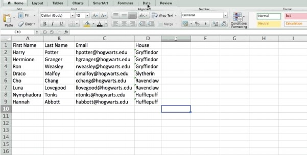
2) Add More Than One New Row or Column
As you play around with your data, you might find you constantly need to add more rows and columns. Sometimes, you may even need to add hundreds of rows. Doing this one-by-one would be super tedious. Luckily, there's always an easier way.
To add multiple rows or columns in a spreadsheet, highlight the same number of preexisting rows or columns that you want to add. Then, right-click and select "Insert."
In the example below, I want to add an additional three rows. By highlighting three rows and then clicking insert, I'm able to add an additional three blank rows into my spreadsheet quickly and easily.
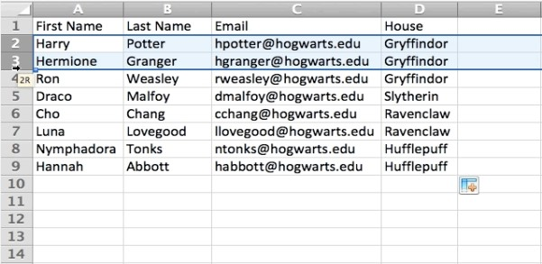
3) Filters
When you're looking at very large data sets, you don't usually need to be looking at every single row at the same time. Sometimes, you only want to look at data that fit into certain criteria. That's where filters come in.
Filters allow you to pare down your data to only look at certain rows at one time. In Excel, a filter can be added to each column in your data -- and from there, you can then choose which cells you want to view at once.
Let's take a look at the example below. Add a filter by clicking the Data tab and selecting "Filter." Clicking the arrow next to the column headers and you'll be able to choose whether you want your data to be organized in ascending or descending order, as well as which specific rows you want to show.
In my Harry Potter example, let's say I only want to see the students in Gryffindor. By selecting the Gryffindor filter, the other rows disappear.
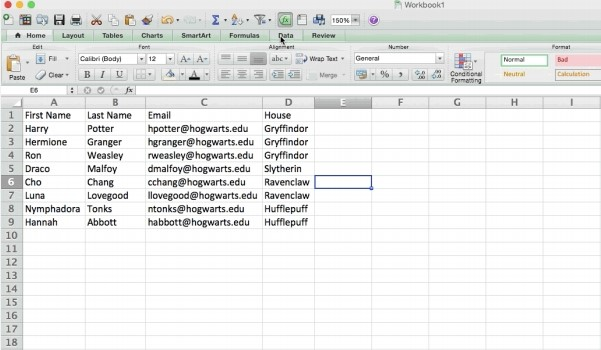
Pro Tip: Copy and paste the values in the spreadsheet when a Filter is on to do additional analysis in another spreadsheet.
4) Remove Duplicates
Larger data sets tend to have duplicate content. You may have a list of multiple contacts in a company and only want to see the number of companies you have. In situations like this, removing the duplicates comes in quite handy.
To remove your duplicates, highlight the row or column that you want to remove duplicates of. Then, go to the Data tab, and select "Remove Duplicates" (under Tools). A pop-up will appear to confirm which data you want to work with. Select "Remove Duplicates," and you're good to go.
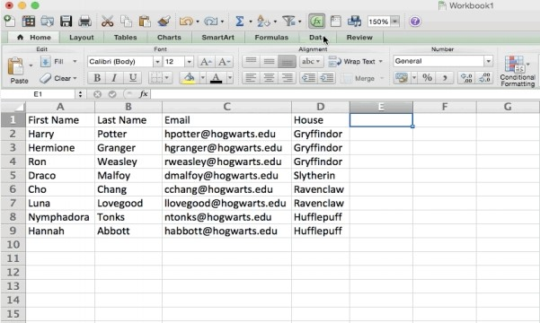
You can also use this feature to remove an entire row based on a duplicate column value. So if you have three rows with Harry Potter's information and you only need to see one, then you can select the whole dataset and then remove duplicates based on email. Your resulting list will have only unique names without any duplicates.
5) Transpose
When you have low rows of data in your spreadsheet, you might decide you actually want to transform the items in one of those rows into columns (or vice versa). It would take a lot of time to copy and paste each individual header -- but what the transpose feature allows you to do is simply move your row data into columns, or the other way around.
Start by highlighting the column that you want to transpose into rows. Right-click it, and then select "Copy." Next, select the cells on your spreadsheet where you want your first row or column to begin. Right-click on the cell, and then select "Paste Special."
A module will appear -- at the bottom, you'll see an option to transpose. Check that box and select OK. Your column will now be transferred to a row or vice-versa.
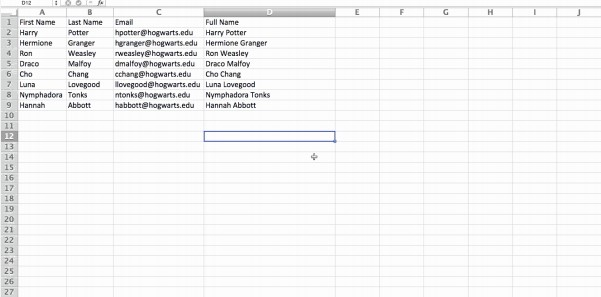
6) Text to Columns
What if you want to split out information that's in one cell into two different cells? For example, maybe you want to pull out someone's company name through their email address. Or perhaps you want to separate someone's full name into a first and last name for your email marketing templates.
Thanks to Excel, both are possible. First, highlight the column that you want to split up. Next, go to the Data tab and select "Text to Columns." A module will appear with additional information.
First, you need to select either "Delimited" or "Fixed Width."
"Delimited" means you want to break up the column based on characters such as commas, spaces, or tabs.
"Fixed Width" means you want to select the exact location on all the columns that you want the split to occur.
In the example case below, let's select "Delimited" so we can separate the full name into first name and last name.
Then, it's time to choose the Delimiters. This could be a tab, semi-colon, comma, space, or something else. ("Something else" could be the "@" sign used in an email address, for example.) In our example, let's choose the space. Excel will then show you a preview of what your new columns will look like.
When you're happy with the preview, press "Next." This page will allow you to select Advanced Formats if you choose to. When you're done, click "Finish."
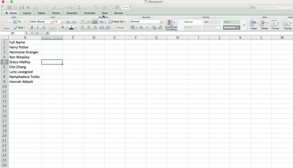
Excel Formulas
7) Simple Calculations
In addition to doing pretty complex calculations, Excel can help you do simple arithmetic like adding, subtracting, multiplying, or dividing any of your data.
To add, use the + sign.
To subtract, use the - sign.
To multiply, use the * sign.
To divide, use the / sign.
You can also use parenthesis to ensure certain calculations are done first. In the example below (10+10*10), the second and third 10 were multiplied together before adding the additional 10. However, if we made it (10+10)*10, the first and second 10 would be added together first.
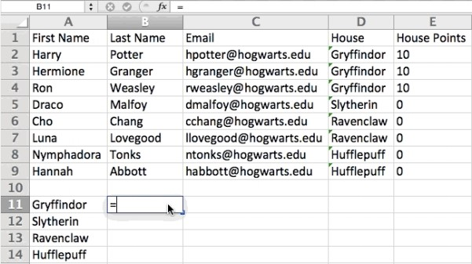
Bonus: If you want the average of a set of numbers, you can use the formula =AVERAGE(Cell Range). If you want to sum up a column of numbers, you can use the formula =SUM(Cell Range).
8) Conditional Formatting Formula
Conditional formatting allows you to change a cell's color based on the information within the cell. For example, if you want to flag certain numbers that are above average or in the top 10% of the data in your spreadsheet, you can do that. If you want to color code commonalities between different rows in Excel, you can do that. This will help you quickly see information the is important to you.
To get started, highlight the group of cells you want to use conditional formatting on. Then, choose "Conditional Formatting" from the Home menu and select your logic from the dropdown. (You can also create your own rule if you want something different.)
A window will pop up that prompts you to provide more information about your formatting rule. Select "OK" when you're done, and you should see your results automatically appear.
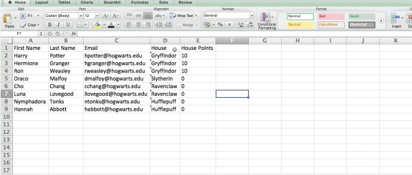
9) IF Statement
Sometimes, we don't want to count the number of times a value appears. Instead, we want to input different information into a cell if there is a corresponding cell with that information.
For example, in the situation below, I want to award ten points to everyone who belongs in the Gryffindor house. Instead of manually typing in 10's next to each Gryffindor student's name, I can use the IF THEN Excel formula to say that if the student is in Gryffindor, then they should get ten points.
The formula: IF(logical_test, value_if_true, value of false)
Example Shown Below: =IF(D2="Gryffindor","10","0")
In general terms, the formula would be IF(Logical Test, value of true, value of false). Let's dig into each of these variables.
Logical_Test: The logical test is the "IF" part of the statement. In this case, the logic is D2="Gryffindor" because we want to make sure that the cell corresponding with the student says "Gryffindor." Make sure to put Gryffindor in quotation marks here.
Value_if_True: This is what we want the cell to show if the value is true. In this case, we want the cell to show "10" to indicate that the student was awarded the 10 points. Only use quotation marks if you want the result to be text instead of a number.
Value_if_False: This is what we want the cell to show if the value is false. In this case, for any student not in Gryffindor, we want the cell to show "0" to show 0 points. Only use quotation marks if you want the result to be text instead of a number.
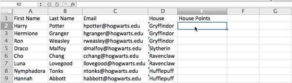
Note: In the example above, I awarded 10 points to everyone in Gryffindor. If I later wanted to sum the total number of points, I wouldn't be able to because the 10's are in quotes, thus making them text and not a number that Excel can sum.
10) Dollar Signs
Have you ever seen a dollar sign in an Excel formula? When used in a formula, it isn't representing an American dollar; instead, it makes sure that the exact column and row are held the same even if you copy the same formula in adjacent rows.
Y ou see, a cell reference -- when you refer to cell A5 from cell C5, for example -- is relative by default. In that case, you're actually referring to a cell that's five columns to the left (C minus A) and in the same row (5). This is called a relative formula. When you copy a relative formula from one cell to another, it'll adjust the values in the formula based on where it's moved. But sometimes, we want those values to stay the same no matter whether they're moved around or not -- and we can do that by making the formula in the cell into what's called an absolute formula.
To change the relative formula (=A5+C5) into an absolute formula, we'd precede the row and column values by dollar signs, like this: (=$A$5+$C$5). (Learn more on Microsoft Office's support page here.)
Excel Functions
11) VLOOKUP Function
Have you ever had two sets of data on two different spreadsheets that you want to combine into a single spreadsheet?
For example, you might have a list of people's names next to their email addresses in one spreadsheet, and a list of those same people's email addresses next to their company names in the other -- but you want the names, email addresses, and company names of those people to appear in one place.
I have to combine data sets like this a lot -- and when I do, the VLOOKUP is my go-to formula. Before you use the formula, though, be absolutely sure that you have at least one column that appears identically in both places.
Scour your data sets to make sure the column of data you're using to combine your information is exactly the same, including no extra spaces.
The formula: =VLOOKUP (lookup value, table array, column number, [range lookup])
The formula with variables from our example below: =VLOOKUP (C2,Sheet2!A:B,2,FALSE)
In this formula, there are several variables. The following is true when you want to combine information in Sheet 1 and Sheet 2 onto Sheet 1.
Lookup Value: This is the identical value you have in both spreadsheets. Choose the first value in your first spreadsheet. In the example that follows, this means the first email address on the list, or cell 2 (C2).
Table Array: The range of columns on Sheet 2 you're going to pull your data from, including the column of data identical to your lookup value (in our example, email addresses) in Sheet 1 as well as the column of data you're trying to copy to Sheet 1. In our example, this is "Sheet2!A:B." "A" means Column A in Sheet 2, which is the column in Sheet 2 where the data identical to our lookup value (email) in Sheet 1 is listed. The "B" means Column B, which contains the information that's only available in Sheet 2 that you want to translate to Sheet 1.
Column Number: If the table array (the range of columns you just indicated) this tells Excel which column the new data you want to copy to Sheet 1 is located in. In our example, this would be the column that "House" is located in. "House" is the second column in our range of columns (table array), so our column number is 2. [Note: Your range can be more than two columns. For example, if there are three columns on Sheet 2 -- Email, Age, and House -- and you still want to bring House onto Sheet 1, you can still use a VLOOKUP. You just need to change the "2" to a "3" so it pulls back the value in the third column: =VLOOKUP (C2:Sheet2!A:C,3,false).]
Range Lookup: Use FALSE to ensure you pull in only exact value matches.
In the example below, Sheet 1 and Sheet 2 contain lists describing different information about the same people, and the common thread between the two is their email addresses. Let's say we want to combine both datasets so that all the house information from Sheet 2 translates over to Sheet 1.
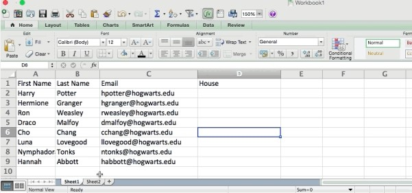
So when we type in the formula =VLOOKUP (C2,Sheet2!A: B,2,FALSE), we bring all the house data into Sheet 1.
Keep in mind that VLOOKUP will only pull back values from the second sheet that are to the right of the column containing your identical data. This can lead to some limitations, which is why some people prefer to use the INDEX and MATCH functions instead.
12) INDEX MATCH
Like VLOOKUP, the INDEX and MATCH functions pull in data from another dataset into one central location. Here are the main differences:
1. VLOOKUP is a much simpler formula. If you're working with large data sets that would require thousands of lookups, using the INDEX MATCH function will significantly decrease load time in Excel.
2. INDEX MATCH formulas work right-to-left, whereas VLOOKUP formulas only work as a left-to-right lookup. In other words, if you need to do a lookup that has a lookup column to the right of the results column, then you'd have to rearrange those columns in order to do a VLOOKUP. This can be tedious with large datasets and/or lead to errors.
So if I want to combine information in Sheet 1 and Sheet 2 onto Sheet 1, but the column values in Sheets 1 and 2 aren't the same, then to do a VLOOKUP, I would need to switch around my columns. In this case, I'd choose to do an INDEX MATCH instead.
Let's look at an example. Let's say Sheet 1 contains a list of people's names and their Hogwarts email addresses, and Sheet 2 contains a list of people's email addresses and the Patronus that each student has. (For the non-Harry Potter fans out there, every witch or wizard has an animal guardian called a "Patronus" associated with him or her.) The information that lives in both sheets is the column containing email addresses, but this email address column is in different column numbers on each sheet. I'd use the INDEX MATCH formula instead of VLOOKUP so I wouldn't have to switch any columns around.
So what's the formula, then? The INDEX MATCH formula is actually the MATCH formula nested inside the INDEX formula. You'll see I differentiated the MATCH formula using a different color here.
The formula: =INDEX(table array, MATCH formula)
This becomes: =INDEX(table array, MATCH (lookup_value, lookup_array))
The formula with variables from our example below: =INDEX(Sheet2!A:A,(MATCH(Sheet1!C:C,Sheet2!C:C,0)))
Here are the variables:
Table Array: The range of columns on Sheet 2 containing the new data you want to bring over to Sheet 1. In our example, "A" means Column A, which contains the "Patronus" information for each person.
Lookup Value: This is the column in Sheet 1 that contains identical values in both spreadsheets. In the example that follows, this means the "email" column on Sheet 1, which is Column C. So: Sheet1!C:C.
Lookup Array: This is the column in Sheet 2 that contains identical values in both spreadsheets. In the example that follows, this refers to the "email" column on Sheet 2, which happens to also be Column C. So: Sheet2!C:C.
Once you have your variables straight, type in the INDEX MATCH formula in the top-most cell of the blank Patronus column on Sheet 1, where you want the combined information to live.
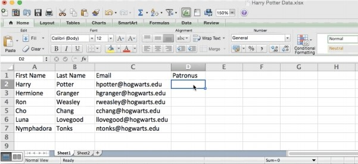
13) COUNTIF Function
Instead of manually counting how often a certain value or number appears, let Excel do the work for you. With the COUNTIF function, Excel can count the number of times a word or number appears in any range of cells.
For example, let's say I want to count the number of times the word "Gryffindor" appears in my data set.
The formula: =COUNTIF (range, criteria)
The formula with variables from our example below: =COUNTIF (D:D,"Gryffindor")
In this formula, there are several variables:
Range: The range that we want the formula to cover. In this case, since we're only focusing on one column, we use "D:D" to indicate that the first and last column are both D. If I were looking at columns C and D, I would use "C:D."
Criteria: Whatever number or piece of text you want Excel to count. Only use quotation marks if you want the result to be text instead of a number. In our example, the criteria are "Gryffindor."
Simply typing in the COUNTIF formula in any cell and pressing "Enter" will show me how many times the word "Gryffindor" appears in the dataset.
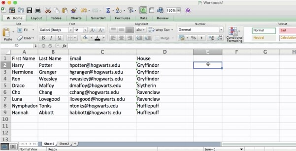
14) Combine cells using "&"
Databases tend to split out data to make it as exact as possible. For example, instead of having a data that shows a person's full name, a database might have the data as a first name and then a last name in separate columns. Or, it may have a person's location separated by city, state, and zip code. In Excel, you can combine cells with different data into one cell by using the "&" sign in your function.
The formula with variables from our example below: =A2&" "&B2
Let's go through the formula together using an example. Pretend we want to combine first names and last names into full names in a single column. To do this, we'd first put our cursor in the blank cell where we want the full name to appear. Next, we'd highlight one cell that contains a first name, type in an "&" sign, and then highlight a cell with the corresponding last name.
But you're not finished -- if all you type in is =A2&B2, then there will not be a space between the person's first name and last name. To add that necessary space, use the function =A2&" "&B2. The quotation marks around the space tell Excel to put a space in between the first and last name.
To make this true for multiple rows, simply drag the corner of that first cell downward as shown in the example.
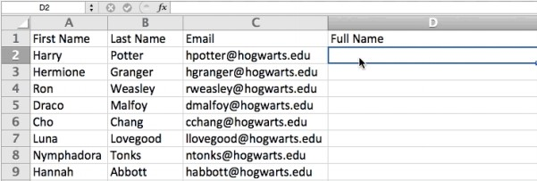
We hope you found this article helpful! Bookmark it to keep these handy Excel tips in your back pocket.